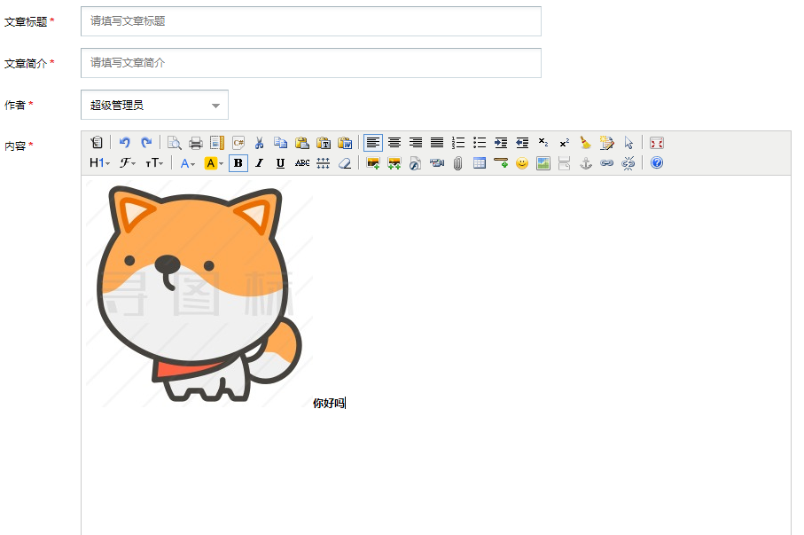

先从官网下载插件，放在static文件下
前端引入
<script type="text/javascript" src="/static/back/kindeditor/kindeditor-all.js"></script>
<script>
KindEditor.ready(function (K) {
window.editor = K.create('#content', {
{# 加上这句话可以使jquery能获取到富文本编辑器的内容#}
afterBlur: function(){this.sync();},
width: "800",
height: "600",
resizeType: 0,
uploadJson: "/back/article/upload/",
extraFileUploadParams: {
csrfmiddlewaretoken: "{{ csrf_token }}"
},
filePostName: "upload_img"//上传图片的名称
});
});
</script>定义富文本编辑器在页面中的位置
<textarea id="content" name="content" style="width:700px;height:250px;"></textarea>ajax提交
#提交按钮
<input name="dosubmit" type="button" id="dosubmit" class="btn" value="马上发布">
# 提交富文本编辑器的内容
<script>
{# 提交文章#}
$('#dosubmit').click(function () {
$.post('/back/article/back_add/',$('form').serialize(),function (data) {
if (data['status']==0){
layer.msg(data['info'])
{#location.href="/back/index/index/"#}
}else{
layer.msg(data['info'])
}
},'json')
})
</script>路由
# 富文本编辑器
re_path('article/upload/', article.upload, name='article/upload/'),
# 接受form表单内容添加文章
re_path('article/add/', article.add, name='article/add/'),后台接收图片方法
#富文本编辑器里上传图片
import os
def upload(request):
"""
编辑器上传文件接受视图函数
:param request:
:return:
"""
# print(request.FILES)
img_obj=request.FILES.get("upload_img")
# print(img_obj.name)
path=os.path.join(settings.MEDIA_ROOT,"add_article_img",img_obj.name)
with open(path,"wb") as f:
for line in img_obj:
f.write(line)
response={
"error":0,
"url":"/media/add_article_img/%s"%img_obj.name
}
return HttpResponse(json.dumps(response))后台接收内容方法
def add(request):
member_obj=Member.objects.all()
member_id = request.session.get('member_id')
member_name=request.session.get('member_name')
if request.method == 'POST':
title = request.POST.get("title")
description = request.POST.get('description')
content = request.POST.get("content")
addtime=time.strftime('%Y-%m-%d',time.localtime())
# 防止xss攻击,过滤script标签
soup=BeautifulSoup(content,"html.parser")#通过字符串创建BeautifulSoup对象，即将字符串转为对象，然后调用对象里的相关方法
print(soup.find_all())#[<img alt="" src="/media/add_article_img/hand.png"/>, <script charset="utf-8" src="/static/blog/kindeditor/kindeditor-all.js"></script>,<img src="/media/add_article_img/thumb_50_img1.jpg" alt="" />]
for tag in soup.find_all():
print(tag.name)#img script
if tag.name=="script":
tag.decompose()
# # 构建摘要数据,获取标签字符串的文本前150个符号
desc = soup.text[0:150] + "..."
obj=Article.objects.create(article_title=title,article_description=desc,article_content=str(content),member_id=member_id,article_addtime=str(addtime).replace('/','-'))
if obj:
return redirect('/back/article/add/')
return render(request,'article/add.html',locals())页面效果

done。